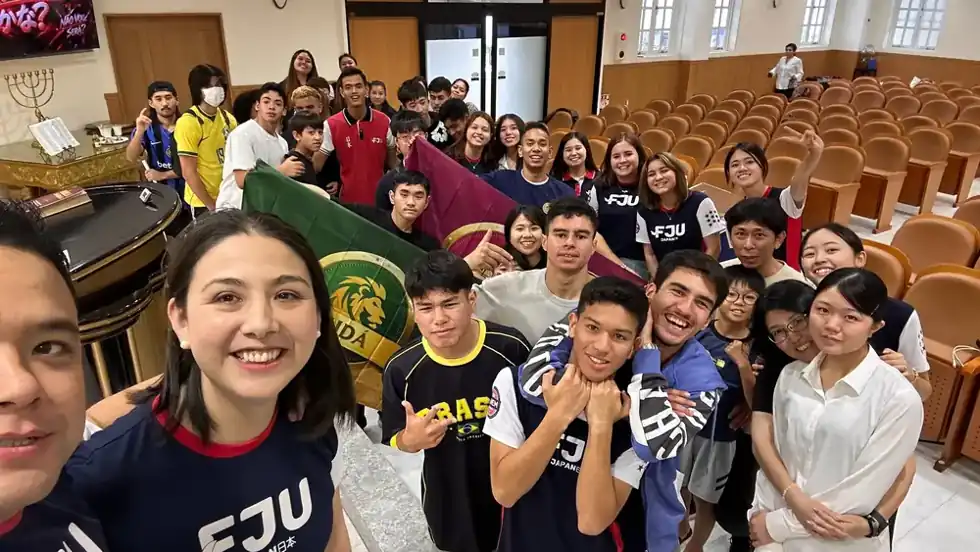
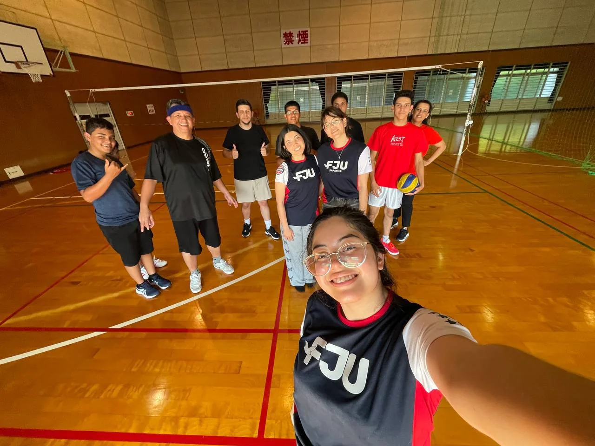
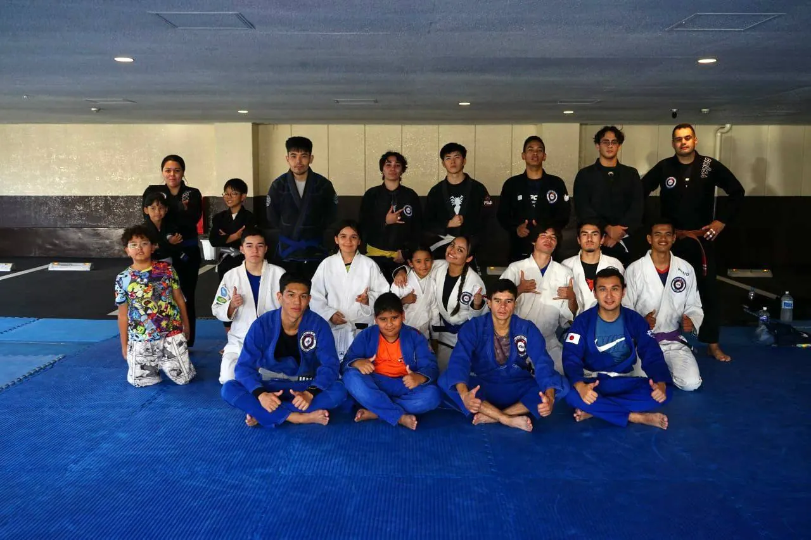
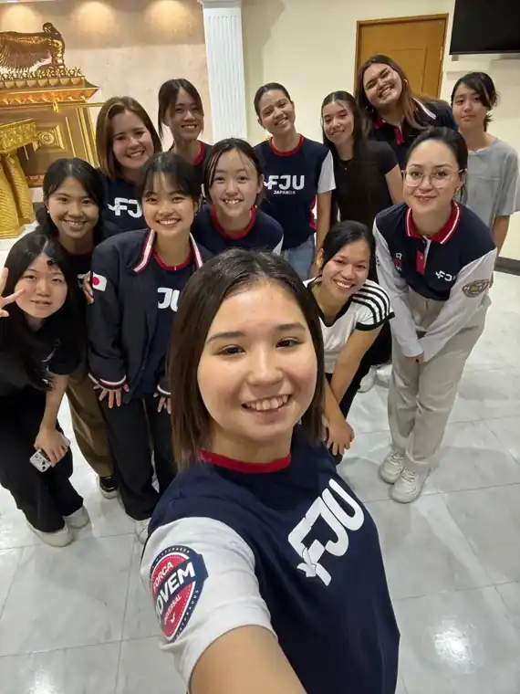
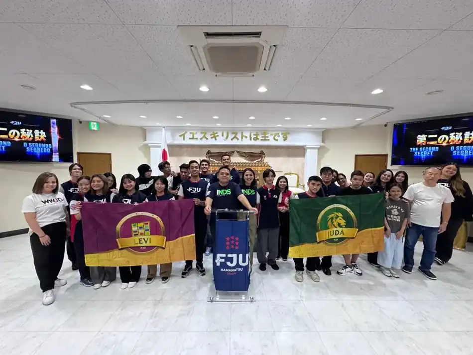

MÍDIA
Criatividade, fotografia, vídeo e comunicação.
Conexões de verdade. Novos desafios. Uma nova direção. Encontre a FJU mais perto de você.

TOGETHER WE GO FURTHER ↗Conheça os projetos da FJU e encontre onde você se encaixa.
Criatividade, fotografia, vídeo e comunicação.

Ação social: servir e ajudar quem precisa.

Projeto Uniforça da FJU.
Todo domingo, às 19h, um encontro para você se conectar, refletir e seguir em frente.
Horário do Japão · YouTube FJU JAPAN
Um pouco da energia dos nossos encontros e atividades em todo o Japão.


Testemunhos e histórias reais da FJU JAPAN.
Muito mais do que uma página: encontros, amizades, desafios e histórias que acontecem aqui no Japão.
Tem alguma dúvida? Fale com a equipe FJU JAPAN.
FALAR COM A FJU ↗